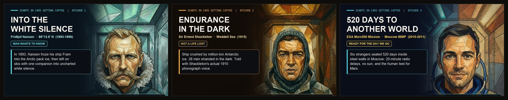
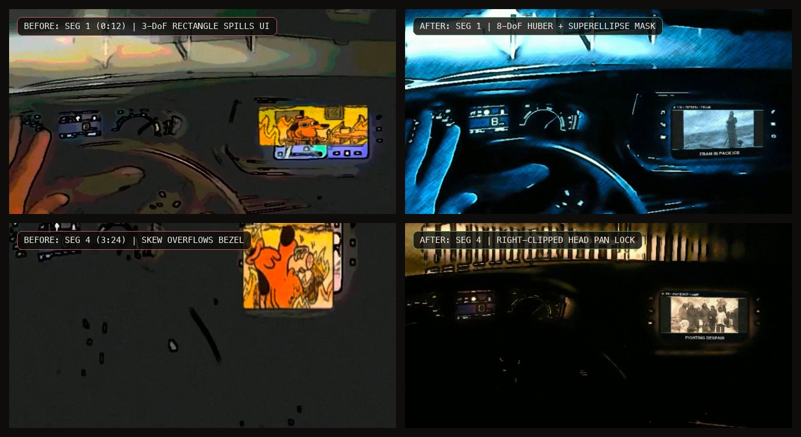
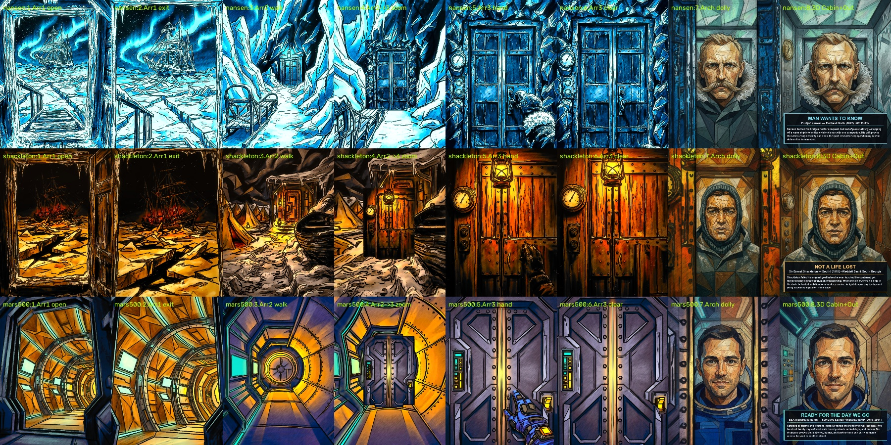

NOTES · VISION & AGENTS
Night-Chalk Drive: a 12-fps rotoscope pipeline from Meta Ray-Ban night footage
While driving around Sabadell, Spain, at night, I recorded five short clips on my Meta Ray-Ban (Gen 2) glasses. I wanted to turn that ordinary drive into three Take On Me style animated shorts, now grouped as Giants in Cars Getting Coffee.
I've picked three real stories of crews going into extreme isolation and coming home alive: Fridtjof Nansen's Fram Arctic drift, Ernest Shackleton's Endurance survival, and the ESA Mars500 520-day mission.
An early coding-agent pass got a very rough color cartoon cut going and produced a first 3-DoF template tracker (baseline_v1_template_tracker.py). Looking at the renders that came back, the car screen stickers would slide off the plastic bezel as soon as you turned your head, and the night sky would turn into gray noise. The ending still went through my actual garage to an elevator mirror.
I took over from that v1 prototype, left the raw video clips completely as they were, and rebuilt the tracker, the shader, the 3D portal endings, and the audio mix all into github.com/macayaven/night-chalk-drive.
What the pipeline outputs
The 5 raw MOV files total 1,125.55 s. pipeline/media_base.py sorts them in chronological order (1453 -> 1430 -> 1460 -> 1446 -> 1439) and re-times the drive into a single 288.0 s base plate at 720x960, 24 fps. The animation itself is at 12 fps, so each pair of consecutive 24-fps frames shares one geometry and one shade pose (3,198 poses across the driving head up to CAR_STOP_POSE = 2989).
| Episode | Speed schedule | Look and ending | Runtime | Watch |
|---|---|---|---|---|
| Ep. 1: Fridtjof Nansen (Into the White Silence) | Crisp hyper-lapse around 1.08x |
Silver-ice chalk, cyan aurora glow, wooden Fram cabin | 4:40 (6,720 f) |
YouTube · X |
| Ep. 2: Sir Ernest Shackleton (Endurance in the Dark) | Heavy pace slowing from 1.35x to 0.38x |
Amber noir, warm bloom, Endurance timber deck & lantern | 4:00 (5,760 f) |
YouTube |
| Ep. 3: ESA Mars500 (520 Days to Another World) | Slow dusk (0.60x) -> 1.65x cruise -> 0.58x unseal |
Indigo CAD teal thawing to daylight gold | 4:15 (6,120 f) |
YouTube |

The 15-second clip below shows the jump from raw glasses footage and the drifting v1 template matcher to the locked v2 tracker and finished trilogy.
Tracking the car display across head turns
In baseline_v1_template_tracker.py, cv2.matchTemplate was only searching over six uniform zoom steps (0.85 to 1.25) plus (dx, dy) shifts. That 3-DoF model doesn't work when the wearable camera goes past the angled dashboard screen, as perspective tilts and shears the rectangle into a trapezoid. Even worse, it was running on the already-cartoonized frames (head_cartoon.mp4) with very large grayscale seeds, so the bright capacitive bezel buttons and the reflections on the steering wheel would completely pull the match off the LCD glass. The 0.25 s windows were also cut separately in FFmpeg, which introduced 1-frame (41.7 ms) offsets so the held 12-fps frame pairs would jump visibly during a quick glance.

Rather than spend any more time debugging the template matcher, I simply reverted detection back to the original uint8 BGR frames from head_raw.mp4 (within the fixed dashboard region x: 295..720, y: 490..850). That tracker is in pipeline/planar_tracker_segments.py and pipeline/track_full_drive_display.py.
A 7x7 morphological closing bridges the dark UI icons in the active LCD without touching the bezel dots. When my hand comes in front of the screen, a color rule (R - B > 34, B < 155, V < 185) brings the skin pixels down to background luminance prior to intersecting four cv2.fitLine(..., DIST_HUBER) edges (contrast >= 52). That threshold worked cleanly in amber cabin light at night; it would probably clip in daylight though.
During wider left head turns, the right side of the LCD leaves x = 720 while the left edge stays sharp. Rather than dropping those frames or shrinking the quad, track_full_drive_display.py measures left-edge height h_left and projects the off-screen right corners out to w_proj = 1.535 * h_left along median top and bottom edge slopes. Bidirectional Lucas-Kanade optical flow and RANSAC homographies bridge short blur gaps, locking all 874 visible poses before parking (pose < 2989) into data/track_quads_full_drive.json. Both frames in each 24-fps pair read the same quad, so within-pair jitter drops to 0.00 px.
Shading night video without lifting black sky
Once every screen corner had been tracked cleanly across the drive, the look itself was still falling apart in low light. Dodge-blend pencil filters take the dark night sky and turn it into noisy gray paper, and video-to-video diffusion takes the small telemetry text inside the display and turns it into shimmer.
So I've split the frame into two independent paths within pipeline/night_chalk_shader.py (ChalkRotoscopeEngine) and pipeline/build_trilogy_films.py. The car and road are shaded from the uint8 BGR raw poses in CIE-Lab space. The clean 72-frame archival screen loops from pipeline/build_dashboard_screens.py warp directly into the locked quad with synthetic glass glare.
In ChalkRotoscopeEngine.render_pose(), I run three bilateral passes (d = 9, 7, 7) to flatten the ISO grain without blunting the steering wheel edges. Luminance is blended as 0.70 * L + 0.30 * L_clahe via a piecewise shadow curve ([0, 14, 22, 42, 85, 145, 210, 255] mapped to [0, 4, 9, 44, 106, 184, 244, 255]) which is then multiplied by a smoothstep gate between L = 14 and L = 28. Anything below L = 22 remains completely dark, and the midtones get a 12-frame bank of +45 deg and -35 deg hatching strokes before prepare_base() splits out the three palettes and speed schedules.
Replacing the garage walk with 6-DoF 3D portals
The raw glasses clip ends after CAR_STOP_POSE = 2989 with me getting out of the car, walking across a parking garage, unlocking an elevator, and appearing in the mirror. That worked once. It didn't work for Nansen, Shackleton, or Mars500.
Dropping the real walk and going in with illustrated arrival plates solved the story identity. The very next 2.5D pass revealed another issue: scaling and tilting flat 2D plates straight after four minutes of head-mounted driving footage looked like sliding cardboard.
I've replaced the 2D affine warps in pipeline/build_3d_finales.py with a pinhole camera raycaster (_project_3d_layer). A double-frequency heel-strike gait curve drives the vertical bounce, lateral stride sway, head pitch nod, yaw, and roll. Each pixel ray is rotated by R_wc = R_y(yaw) @ R_x(pitch) @ R_z(roll), intersects the layer's depth map Z(x, y) over two fixed-point iterations (0.35 * Z_est + 0.65 * Z_sampled), and drops any pixels where Z_est - tz <= 0.12 prior to cv2.remap. FOCAL = 660.0 px wasn't measured from a chessboard calibration at all; that value was tuned by eye against the corridor plates until the perspective parallax looked right.
The first contact sheets revealed 4 geometry bugs in the raycaster. When sky depth in Arr1 was set to Z = 10..14, the doorway would expand past 2.5x while the background barely scaled (1.05x), resulting in horizontal color streaks at the edges. Bounding world_z between 1.12 and 1.72 kept the world in view. On Arr2, cutting out the foreground props and calling OpenCV TELEA inpainting left behind quite a few blurry halos as the parallax changed, so I just removed the inpainting entirely and went to continuous blurred corridor depth maps with a 24% relief pull over the sleds and boats.
On Arr3, each door plate had a reaching arm painted right across the center seam, so opening the leaves was effectively sawing the hand in half. Mirror-reconstructing a clean door leaf (clean_bgr with matched column gain) and masking out the arm via cv2.grabCut lets the hand rise from below, cast a shadow, turn the latch -4.5 deg, and exit prior to the leaves parting. Finally, sliding the whole image tore the barometers and wall panels off the outer archway, so I restricted door-leaf motion to ARCH_BOUNDS behind the arch (Z = 1.00), revealing the concave protagonist cabin from pipeline/build_trilogy_tails.py and pipeline/cubist_portrait.py.

For audio (pipeline/audio_dsp.py and pipeline/build_audio_mix.py), speech from LibriVox readings, Shackleton's 1910 phonograph cylinder, and the ESA Mars500 clips ducks the music bed from 1.00 down to 0.36 over 20 ms RMS hops prior to two-pass loudnorm to -14.0 LUFS.
What worked and what did not
Tracking the untouched raw luminance (head_raw.mp4) rather than the stylized video, locking consecutive 24-fps frame pairs to identical 12-fps quad coordinates, and keeping the black sky gated below L = 22 worked on the first clean pass. Rendering the CIE-Lab chassis once across all three story palettes and checking full contact sheets prior to encoding saved hours of full-length MP4 rebuilds.
A few of the early choices didn't work at all. 3-DoF matchTemplate drifts on head-mounted turns and just doesn't work, and OpenCV TELEA inpainting blurs too much to be any use when trying to hide props behind parallax shifts. The flat 2.5D scale warps look rather artificial against the real glasses footage, and using a single merged door-plus-hand illustration ended up requiring far more GrabCut cleanup than the scene was worth.
What I would do differently next time
I'd have the actual repo layout and tests/test_pipeline_geometry.py in place on day one rather than having all these early scripts piling up in scratch folders. I'd generate the clean background plates and separate foreground prop layers right from the start, which would completely eliminate the need for mirror-door reconstruction and GrabCut arm extraction.
I'd also do a quick chessboard calibration on the Meta Ray-Ban lenses rather than just eyeballing FOCAL = 660.0 px and the 1.535 right-pan ratio, and keep the visual speed curves and audio timestamps in a single shared manifest so that changing pacing doesn't require going back to re-check WAV offsets.
Future work
If I take this pipeline further, I'd replace the hand-authored corridor depth ramp in pipeline/build_3d_finales.py with monocular metric depth predictions (Depth Anything v2) plus learned disocclusion fill. I'd port ChalkRotoscopeEngine and _project_3d_layer over to Metal or CuPy so scrubbing isn't CPU-bound. I'd also wire the golden-quad and black-sky assertions into GitHub Actions.
Setup
Apple Silicon (arm64, macOS 26.7.3), FFmpeg 8.1.2 (videotoolbox), Python 3.12+ via uv, OpenCV (opencv-python-headless), NumPy, SciPy, and Pillow. Source data is five MOV clips from the Meta Ray-Ban (Gen 2) glasses (1,125.55 s total) retimed to 288.0 s (720x960, 24 fps, paired 12-fps poses up to CAR_STOP_POSE = 2989). Scripts, quad data, and unit tests are all at github.com/macayaven/night-chalk-drive, and the archival credits are in docs/TRILOGY_CREDITS_AND_TIMELINE.md.